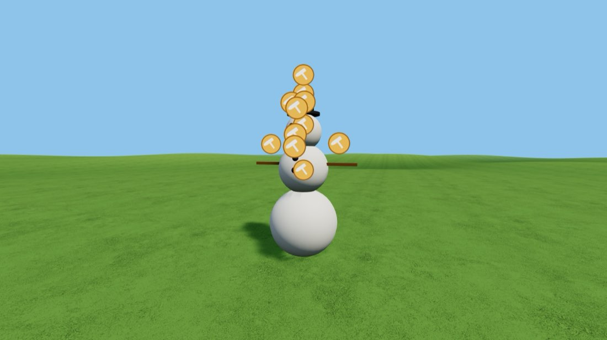
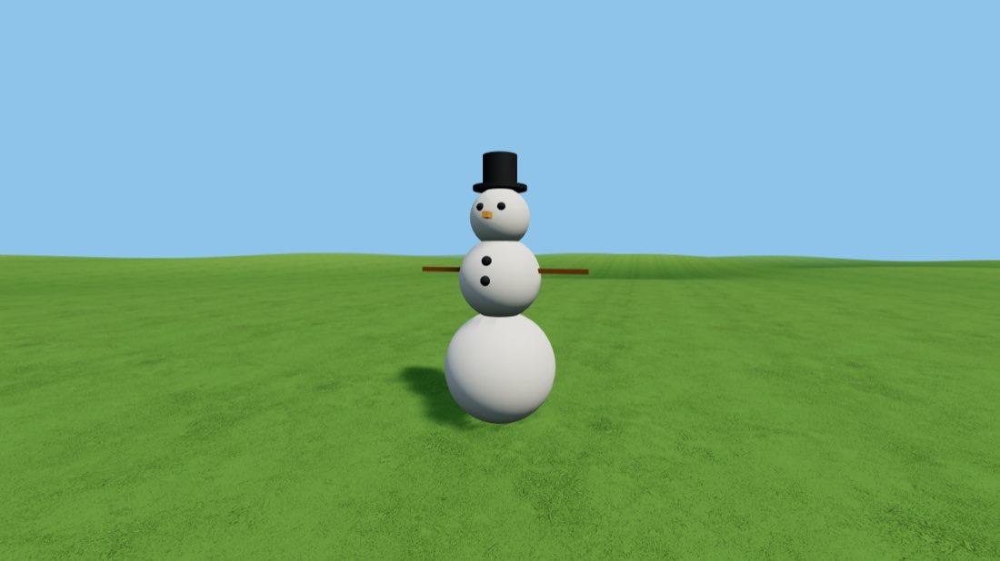

⛄ Build a Snowman
Four balls, a hat and a carrot. The best first build there is — you learn stacking, painting and joining without stretching anything at all.
- Add three spheres. Menu → Create Model → Sphere, three times. They fan out in front of you.
- Make them three different sizes. Hammer → Stretch to Shape on the second one, then drag a corner handle inwards until it is about three-quarters the size of the first. Do the same to the third, but smaller again. Press ✓ Done each time.
- Stack the middle ball. Hammer on the medium sphere → Stretch to Shape. Drag the middle of the blue box until it is right beside the big one, then drag the green ball upwards until it sits on top. It will not be centred — nudge the same green ball sideways until it is. Let it sink in a little too: a snowman with a gap looks wrong, and pieces have to touch to be joined.
- Stack the head the same way, on top of the middle ball.
- Paint them white. Hammer → Apply Texture → the white swatch, on all three.
- Add a hat. Two cylinders: squash one flat with a top corner handle for the brim, leave the other taller for the crown. Lift both onto the head, paint them black.
- Face and buttons. Two tiny spheres for eyes, small ones down the front for buttons — shrink them right down with a corner handle, lift them into place and paint them black. For the nose, take a cube, squash it thin and long, paint it orange.
- Arms. Two more cubes, squashed into long thin sticks, painted brown, one each side.
- Join everything. Hammer on the middle ball → Connect to Primitive. It lists everything touching it — join them. Work outwards until every piece is connected to a neighbour.
- Render. Hammer on any piece → Render Model. The hammers vanish and you have a snowman.
🎯 Now change something: click your finished snowman and choose Size → 300%. A snowman three times the size of a person is a very different thing to stand next to. Then try 40%.

